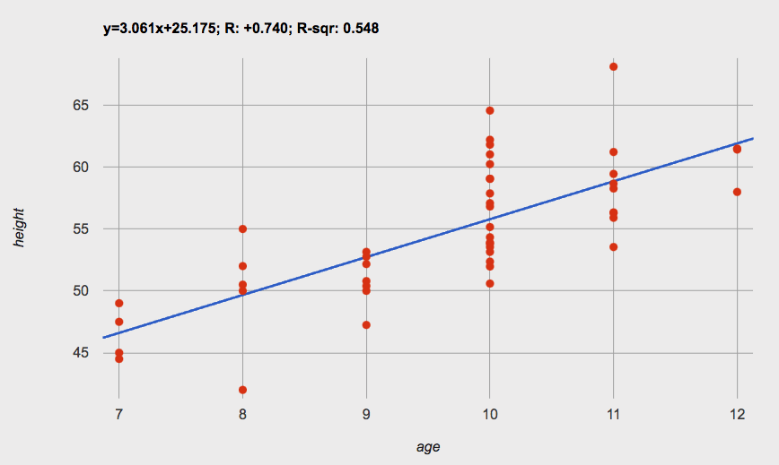

{kind=link}
1 About how many inches are kids in this dataset expected to grow per year? 3 inches
2 At that rate, if a child were 45" tall at age eight, how tall would you expect them to be at age twelve? 57 inches
3 At that rate, if a ten-year-old were 55" tall at age 11, how tall would you expect them to have been at age 9? 49 inches
4 Using the equation, how tall would you expect a seven-year-old child to be? 46.6 inches
5 How many of the seven-year-olds in this sample are actually that height? zero!
6 Using the equation, determine the expected height of someone who is…
| 7.5 years old | 13 years old | 6 years old | newborn | 90 years old |
|---|---|---|---|---|
48 in |
65 in_ |
48 in |
43.5 in |
_301 in |
7 For which ages is this predictor function likely to be the most accurate? Why?
Only ages within the range of the dataset. This function might be incredibly accurate for this population
but that doesn’t mean it’s accurate for other populations! A great predictor for the heights of students at a
basketball training camp could be a terrible predictor when used with students at a gymnastics camp.
8 For which ages is this predictor function likely to be the least accurate? Why?
The regression might still work for extrapolating the height of a 6-year-old or a 13-year-old,
since they are just beyond the range of the dataset, but it makes no sense to use this equation to figure
out the height of a 90-year-old or babies, because humans don’t grow at a constant rate for their entire life!
These materials were developed partly through support of the National Science Foundation, (awards 1042210, 1535276, 1648684, and 1738598). Bootstrap by the Bootstrap Community is licensed under a Creative Commons 4.0 Unported License. This license does not grant permission to run training or professional development. Offering training or professional development with materials substantially derived from Bootstrap must be approved in writing by a Bootstrap Director. Permissions beyond the scope of this license, such as to run training, may be available by contacting contact@BootstrapWorld.org.